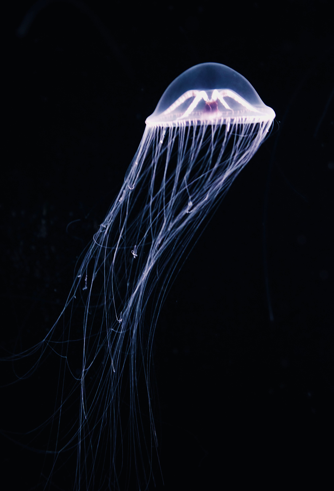

Camaleões mudam de cor apenas para se camuflar.
Mito! Eles mudam de cor principalmente para regular a temperatura e expressar humor.
O bicho-preguiça sabe nadar muito bem.
Verdade! Apesar de lentas na terra, as preguiças são nadadoras ágeis e conseguem prender a respiração por muito tempo.

As águas-vivas são imortais.
Verdade! A espécie Turritopsis dohrnii consegue reverter seu ciclo de vida e voltar a ser um "bebê" quando fica velha ou doente.